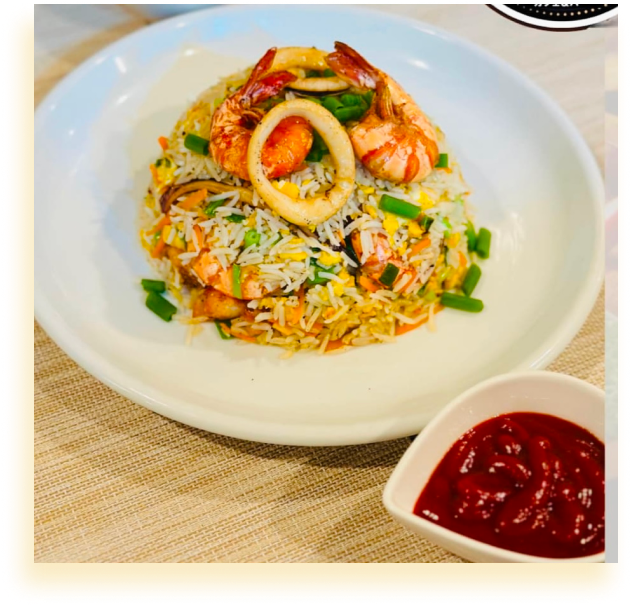
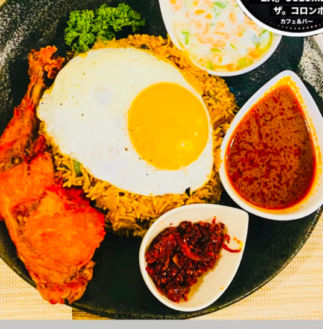
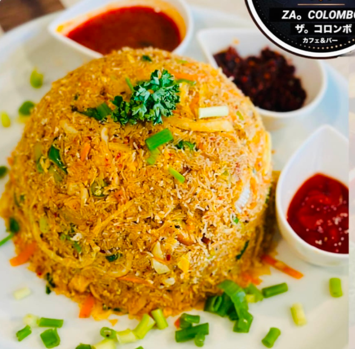

2 シーフードライス ¥ 1400 スリランカ風シーフードチャーハンは、バスマティ米、エビ、イカ、野菜、香り高いスパイスで作られたスパイシーで風味豊かな料理で、チリペーストやソースと一緒に提供されます。 使用スパイスの詳細 
5 ナーシグラン ¥ 1400 ナシゴレンは、インドネシアの人気のあるチャーハンで、炊いたご飯、野菜、肉（鶏肉、エビ、牛肉など）を使い、醤油、ニンニク、チリ、スパイスで味付けされています。上に目玉焼きを乗せて、さらに風味を加えることがよくあります。 使用スパイスの詳細
6 ビリヤニ ¥ 1600 ビリヤニは、バスマティライス、肉（鶏肉、マトン、牛肉など）、クミン、コリアンダー、サフランなどのスパイスを使った風味豊かで香り高い料理です。ヨーグルトで調理し、揚げ玉ねぎ、ゆで卵、新鮮なハーブで飾り付けて、リッチで savory な味わいを楽しめます。 使用スパイスの詳細 
7 トリングホッパーコッター ¥ 1600 ストリングホッパーズコットゥは、ロティの代わりに蒸したストリングホッパー（細い米粉のヌードル）を使ったコットゥのバリエーションです。ストリングホッパーを野菜、スパイス、肉や卵と一緒に炒めて、伝統的なコットゥとはひと味違った風味豊かな料理です。 使用スパイスの詳細 